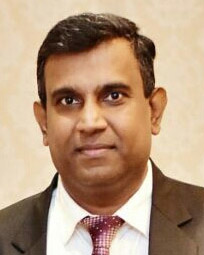
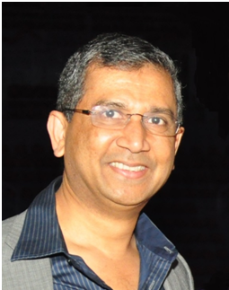

Messages
- ASPCR - SLCD 2018
- About ASPCR-SLCD 2018
- Messages
Message from the President, ASPCR
Dear Colleagues and Friends,

ASPCR was founded by a group of Asian dermatologists and researchers in order to explore pigmentation disorders and to promote connections of pigment cell researchers in the Asia-Pacific region. Our Society is relatively young, created in 2004 and officially admitted by IFPCS in 2005. Whereas it is a truly valuable organization. Over the past 13 years, we have successfully organized several annual meetings of the ASPCR, which were hosted in a different Asian country. Most recently, the IPCC in Singapore in 2014, the 7th ASPCR in Shanghai, China in 2015, and the 8th ASPCR in Kaohsiung, Taiwan in 2016 had all achieved very positive responses. Outstanding experts and key opinion leaders from Asia and around the world were invited to give keynote lectures at each annual meeting, which greatly helped push forward the progress of pigment cell research in Asia.
Now we are expecting another superb event: the 9th annual meeting of the ASPCR. I am honored to be the President of the Asian Society for Pigment Cell Research (ASPCR) and one of the Council Members of International Federation of Pigment Cell Societies (IFPCS) from 2017 to 2020. On behalf of ASPCR, I am delighted to extend our warmest welcome and invite you to join us in Colombo, a popular tourist destination and the largest city of Sri Lanka from 15th to 18th August 2018. The event, organized by Dr. Saman Gunasekara and Prof Prasad Kumarasinghe, will be held as a joint meeting with the Sri Lanka College of Dermatologists.
We expect more and more leading clinicians, researchers, and educators could join us, take an active part in ASPCR conference, and become our member. Let’s gather together to promote the advancement of pigment cell research and relevant translational research in Asia!
We look forward to welcoming you in Colombo, Sri Lanka in 2018.
With warm regards,
Prof. Leihong Flora Xiang, MD, PhD
President ASPCR
Message from the president, SLCD
Dear Friends,
This international conference is organized jointly by the Asian Society for Pigment cell Research (ASPCR) and the Sri Lanka College of Dermatologists (SLCD).The meeting will be held from 15th to 18th August 2018 at The Kingsbury, Colombo, Sri lanka.
It gives me immense pleasure and honour as the President of Sri Lanka College of Dermatologists to welcome you to our beautiful country. Our theme “Colours of Health & Disease” emphasizes the spirit of the meeting and we hope this conference will help us to meet the needs of the region and will pave the way towards better patient care.
This joint meeting brings together many eminent speakers covering a wide array of topics. We look forward to enriching academic feast during this three day meeting. A comprehensive scientific programme has been designed covering all issues of current interest with emphasis on basic and applied science of pigmentary disorders and pigment cell research.
Apart from the scientific session we have organized many social events, which we hope you will enjoy.
I take this opportunity to thank Associate Prof. Prasad Kumarasinghe, Co-chairperson of 9th ASPCR for the tremendous support, guidance and bringing together reputed international faculty.
I also thank my local organizing committee of SLCD for rallying together, dedicating their valuable time and energy towards making this congress both successful and memorable.
I look forward to seeing you all in Colombo and wish everyone a cherishable stay in Sri Lanka.
Warm Regards
Dr. Saman Gunasekara
President, SLCD
Co-Chairperson, ASPCR-SLCD 2018
Colombo,
Sri Lanka
Message from Co-Chairperson ASPCR-SLCD 2018
Dear Friends,
I delighted to welcome you to the 9th ASPCR Conference, jointly organized by the Asian Society for Pigment Cell Research(ASPCR) and Sri Lanka College of Dermatologists. ASPCR has come a long way from its inception in 2004 in Beijing, China. As the Founder President of the ASPCR I had the privilege to serve in the capacity of the President of ASPCR from 2004-2008. ASPCR has had many successful conferences in India, Singapore, South Korea, China, Australia and Taiwan. ASPCR was the host to the highly successful International Pigment Cell Conference(IPCC) in Singapore in 2014.
We have an excellent programme for both the SLCD and ASPCR segments of ASPCR-SLCD 2018 Conference, with world leaders on pigmentary disorders from many parts of the world delivering guest lectures, and many participants from the length and breadth of Asia presenting an array of original free papers.
The economies and populations of Asia are expanding, and Asians’ expectations of medical care and aesthetic aspects are growing. It is imperative that we, as dermatologists and researchers in the Asian Region take a greater interest in pigmentary disorders because psychosocial impact of pigmentary disorders is a major concern for people of skin of color. This type of conferences help stimulate clinical and basic science research on pigmentary disorders in the host country and the region.
I am very grateful to the President of the SLCD Dr Saman Gunasekara and the SLCD Committee for their unstinted support and cooperation in organizing this historic meeting. They have put in a lot of hard work to make this event come to fruition. As a past president of the Sri Lanka Association of Dermatologists(SLAD), the forerunner of the Sri Lanka College of Dermatologists(SLCD), it gives me great pleasure to see how the SLCD has evolved as a formidable professional body in Sri Lanka. SLCD has hosted many important Regional and bilateral meetings in the past as well. SLCD also hosted the First International Tropical Dermatology Conference in Sri Lanka in 2016. Sri Lanka is indeed a very popular venue for medical conferences now.
The friendships and research collaborations one starts at conferences like this go a long way. So enjoy the meeting, enjoy the beautiful country of Sri Lanka and be stimulated by the academic feast on pigmentary disorders!
Prof. Prasad Kumarasinghe
Co-Chairperson ASPCR-SLCD 2018
Perth
Western Australia
Australia